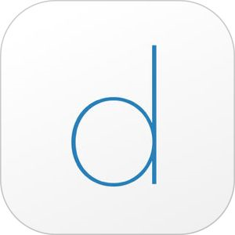
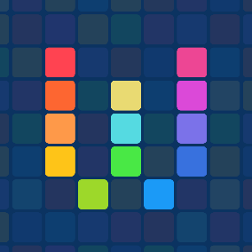
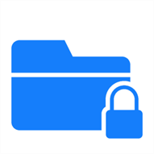
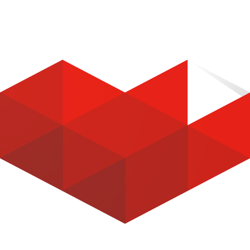
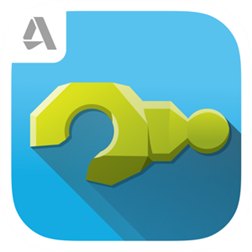
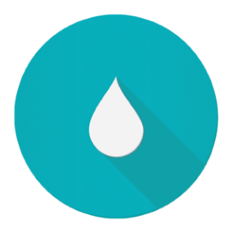
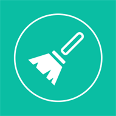
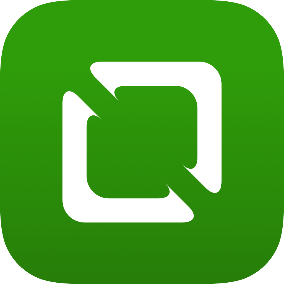
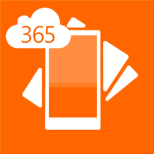
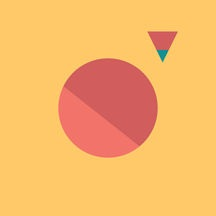

Round Icons
Graphic Design
Проиводителност
Live GIF (iOS)
От Priime, Inc.
С новите iPhone 6s и 6s Plus вие можете да правите т.нар. живи снимки (Live Photos), а сега с приложението Live GIF ще можете да споделяте тези живи снимки като GIF файлове и видеоклипове! Разширете вашата креативност, споделяйте с Facebook, iMessage, Twitter, Email, Instagram и други. Live GIF е създадено, за да бъде бързо и удобно - без регистрация, трябва просто да отворите вашите живи снимки и да ги споделите.
Цена: 1,99 долара
Изтегли приложението от App Store
Харесай Добави в любими
BlockBear: Block Ads and Protect Your Privacy With a Bear (iOS)
От TunnelBear, Inc.
BlockBear е много просто и очарователно приложение, което блокира рекламите и защитава вашата поверителност в Safari. BlockBear блокира изскачащи прозорци, текстови реклами, банери, за да ви осигури едно по-бързо и приятно сърфиране на вашето iOS устройство. Предпазете вашия личен живот от широко разпространеното онлайн проследяване - бисквитки, скриптове и т.н. Имате възможност да добавите любими уеб сайтове в белия списък.
Цена: Безплатно
Изтегли приложението от App Store
Харесай Добави в любими

Duet Display (iOS)
Kairos Technologies, Inc.
Duet Display ви позволява да използвате вашия iPad или iPhone като допълнителен дисплей. Приложението е разработено от екип от бивши инженери на Apple и то ще увеличи вашата производителност. Работете по-ефективно с Duet Display. Duet Display увеличава производителността на инженери, музиканти, дизайнери, художници с до 48 процента. Свържете вашето i-устройство към вашия Mac с помощта на lightning кабел или 30-пиновия кабел на Apple и готово. Няма нужда да се притеснявате за Wi-Fi скорости и други пречки. Duet Display ви позволява да използвате вашите iOS и OS X устройства в хармония.
Цена: 7.99 долара
Изтегли приложението от App Store
Харесай Добави в любими
#1 ToolKit (Windows)
От Ccool Media
#1 ToolKit е пълен пакет от приложения, които включват Pro комплекти с общо 16 инструмента. С една дума All-In-One. Комплект 1: линия, компас, транспортир, нивелир. Комплект 2: фенер, огледало, лупа. Комплект 3: конвертор на мерни единици. Комплект 4: детектор за шум, диктофон. Комплект 5: таймер, хронометър, световен часовник...
Цена: Безплатно
Изтегли приложението от Windows Store
Харесай Добави в любими
10Calc (Windows)
От Prajjwal
10Calc е елегантен, бърз, лек и мощен калкулатор за Windows Phone. Той ще ви предложи множество полезни функции, включително конвертор на мерни единици, теми, функция за копиране, история на калкулациите, бърз калкулатор за програмисти, интелигентен калкулатор за поделяне на сметки + изчисляване на бакшиши, калкулатор за ипотеки и заеми.
Цена: Безплатно (Предлага покупки в приложението)
Изтегли приложението от Windows Store
Харесай Добави в любими

Workflow: Powerful Automation Made Simple (iOS)
От DeskConnect, Inc.
Workflow е вашият личен инструмент за автоматизация, който ви позволява да влачите и пускате всяка комбинация от действия, за да създавате мощни работни потоци на вашия iPhone, IPAD и Apple Watch. Workflow включва над 200 действия, включително тези за контакти, календар, карти, музика, снимки, камера, напомняния, Safari, AirDrop, Twitter, Facebook, Dropbox, Evernote и iCloud документи.
Цена: $2,99
Изтегли приложението от App Store
Харесай Добави в любими

Hide Photos 2.0 (Windows)
От Mobile Communications
Hide Photos е лично шкафче за снимките във вашия Windows Phone. С това приложение ще можете да поддържате всички ваши лични снимки скрити и защитени зад множество слоеве сигурност. Прегледайте вашата фотогалерия и изберете снимките, които искате да бъдат защитени. Качете ги в Hide Photos и след това изтрийте изображенията в стандартната ви галерия – те ще останат видими само за вас. Вече няма да се притеснявате, че някой приятел или член на семейството ви ще види неподходящи за чужди очи снимки.
Цена: Безплатно
Изтегли приложението от Windows Phone Store
Харесай Добави в любими

YouTube Gaming (Android, iOS)
От Google Inc.
YouTube Gaming приложението за Android и iOS ще ви държи свързани с игрите, играчите и гейминг културата. Гледайте клипове и предавания на живо с опция за чат - включително ревюта, игри на скорост, трейлъри и още от любимите ви геймъри и издатели на игри. Наслаждавайте се на игрите навсякъде и по всяко време - Minecraft, Grand Theft Auto, League of Legends, Call of Duty и още десетки хиляди, увеличаващи се всеки ден. YouTube Gaming ви очаква!
Цена: Безплатно (Предлага покупки в приложението)
Изтегли приложението от Google Play Store, App Store
Харесай Добави в любими

Tinkerplay (Android, iOS, Windows)
От Autodesk Inc.
Измислете дизайн, персонализирайте и принтирайте в 3D. С Tinkerplay лесно можете да проектирате и отпечатате в 3D забавни герои, страшилища или нещо друго, което може да си изберете от вградената библиотека. Просто плъзгайте частите една към друга и те ще се сглобят, точно както в действителност. Дайте воля на въображението си Персонализирайте вашето творение, за да направите всяка част на своя герой невероятна и уникална. Използвайте функцията за приближаване, за да правите по-подробни промени.v Отпечатайте творенията си в 3D Когато вашият проект е готов, можете лесно да го отпечатате на 3D принтер, за да стане той реалност. Tinkerplay частите са предназначени да се отпечатват на 3D принтер лесно. Готови за печат? Изтеглете на STL или .thing файловете за отпечатване на модулите и готово. Tinkerplay разполага с пълна поддръжка на мултитъч, а всичко, което правите, се запазва автоматично. Отменяйте и повтаряйте на воля.
Цена: Безплатно (Предлага покупки в приложението)
Изтегли приложението от Google Play Store, App Store, , Winows Store
Харесай Добави в любими
8 Zip Lite (Windows)
От Finebits OÜ
8 Zip Lite е полезен инструмент за архивиране на файлове. Олекотената версия ви позволява да работите със ZIP архиви, както и да отваряте и преглеждате други формати. Всички функции за работа с други формати са налице в платената версия.
Цена: Безплатно (Предлага покупки в приложението)
Изтегли приложението от Windows Store
Харесай Добави в любими

Flud - Торент клиент (Android)
От Delphi Softwares
Flud е лек и бърз BitTorrent клиент за Android. Силата на BitTorrent протокола е вече в ръцете ви. Споделяйте лесно и сваляйте файлове директно на телефона или таблета си. Характеристики:
-
Няма ограничение на скоростта
- Възможност за избор на файловете при сваляне
- Възможност за оказване на приоритети
- Поддържа криптиране
- Поддържа магнитни връзки
- Поддържа NAT-PMP, DHT, UPnP (Universal Plug and Play)
- Поддържа µTP (µTorrent Transport Protocol) , PeX (Peer Exchange)
- Възможност за последователно сваляне на частите
- Възможност за преместване на файловете по време на сваляне
- Поддържа торенти с голям брой файлове
- Поддържа торенти с големи файлове (Забележка: 4ГБ е лимитът за файл при форматирана под FAT32 карта памет)
- Разпознава магнитни връзки от браузъра
Цена: Безплатно
Изтегли приложението от Google Play Store
Харесай Добави в любими

Storage Cleaner Pro (Windows)
От weifengke
Storage Cleaner Pro ви дава възможност по-удобно да почистите кеша на вашия Windows смартфон. С едно докосване ще изчистите всички ненужни файлове и кеш, генерирани от приложенията в телефона ви. Само за няколко секунди ще направите телефона си по-чист и по-бърз.
Цена: Безплатно
Изтегли приложението от Windows Phone Store
Харесай Добави в любими
Opera Max – диспечер за трафик (Android)
От Opera Software ASA
Opera Max пести трафик, увеличава плана ви с данни и ви предоставя несравним контрол върху потреблението на данни на телефона ви. Това приложение за управление и икономия на данни намалява потреблението на трафик в 3G/4G/LTE и Wi-Fi мрежи с до 50%. Пестете данни, като компресирате видеоклипове, снимки и медийно съдържание в любимите си приложения и уебсайтове в мобилни и Wi-Fi мрежи – без забележима загуба на качество. Opera Max също така ви помага да удължите живота на батерията и плана си с данни, като ви позволява да блокирате приложенията, които работят във фонов режим без знанието ви. Освен това можете да я използвате като Wi-Fi диспечер за по-добър контрол върху работата на приложенията ви във фонов режим, когато сте свързани към Wi-Fi мрежа.
Цена: Безплатно
Изтегли приложението от >Google Play Store
Харесай Добави в любими

Lrn - Learn to code at your convenience (iOS)
От Lrn Labs, Inc.
Искате ли да се научите да пишете код докато сте в движение, чрез интерактивни мини-викторини? Lrn е приложението, което ще ви помогне да разберете как да четете, пишете и говорите езика на програмистите. Няма нужда от предишен опит, интернет или клавиатура. Lrn работи офлайн и с него ще станете перфектен програмист. Одобрено от водещи медии като The Next Web, Business Insider, Gizmodo, Catalog Hunt, Lifehacker, Nu.nl и други!
Цена: Безплатно (Предлага покупки в приложението)
Изтегли приложението от App Store
Харесай Добави в любими

Handyscan (Windows)
От JDB Pocketware
Handyscan е портативен скенер за документи. С това приложение можете да сканирате всичко в телефона си и да го носите със себе си, да го изпратите по имейл или да го запишете в „облака“. От разписки до договори; от комикси до уроци; от списания и статии във вестници до стари снимки, бележки... контакти, брошури, подписи, фактури, и т.н. и т.н. и т.н.
Цена: Безплатно
Изтегли приложението от Windows Store
Харесай Добави в любими
bizview (Windows)
От Touch Solution di Montimoregi Stefano
Bizview е най-доброто Google Analytics приложение за Windows Phone и Windows 8.1 (Universal App). Осъществявайте достъп до всички ваши Google Analytics профили от вашия компютър, телефон и таблет. Приложението е оптимизирано за компютри, телефони и таблети, така че лесно можете да получите данните си по всяко време, навсякъде. Bizview ви дава достъп до информация в реално време и възможност да добавяте плочки за любимите си Google Analytics.
Цена: Безплатно
Изтегли приложението от Windows Store
Харесай Добави в любими

LogoScopic Studio – Logo Maker (iOS)
От RoadRocks
LogoScopic е вашето лично лого дизайн студио, в което ще визуализирате и създавате свое дизайнерско лого за вашата марка, без нужда от предишен опит в дизайна. Имате на разположение повече от 850 напълно редактируеми и поръчкови лого шаблони. Имате различни инструменти за редактиране плюс 100 ръчно подбрани шрифтове, подкрепени от революционни типографски функции.
Цена: Безплатно (Предлага покупки в приложението)
Изтегли приложението от App Store
Харесай Добави в любими
Twitch (Android, iOS)
От Twitch Interactive, Inc.
С Twitch за Android и iOS можете да гледате живи излъчвания на игрите, които обичате, и да чатите с играчите, които следите. Независимо дали сте в League of Legends, Call of Duty, Minecraft или дори Clash of Clans. Характеристиките включват:
- Живи предавания и записи от най-добрите игри, играчи и електронни спортове
- Интерактивни предавания от Xbox, Sony, Riot Games, Blizzard и други разработчици
- Пълнофункционален чат, включително chat-only режим дори когато каналът е офлайн
- Възможност за следване на канали и игри, в които искате да наблюдавате какво се случва
- Поддръжка на Chromecast
Цена: Безплатно
Изтегли приложението от Google Play Store, App Store
Харесай Добави в любими
Steller (iOS)
От Mombo Labs
Всеки си има история за разказване. Споделете вашата със снимки, видео и текст, чрез iPhone приложението Steller. Steller ви позволява да: Създавате красиви визуални истории със снимки, видео и текст направо на вашия iPhone Персонализирате облика на вашата история с прости, елегантни инструменти за проектиране Публикувате истории в Steller и ги споделяте в други социални мрежи Изпращате вашите истории чрез електронна поща и SMS Вграждате вашите истории във вашия блог или уебсайт Коментирате други истории в Steller общността Откривате нови истории всеки ден от по-широк кръг от теми, включително приключения, фотография, храна и повече Вземате участие в проекти на Steller общността
Цена: Безплатно (Предлага покупки в приложението)
Изтегли приложението от App Store
Харесай Добави в любими
- Последно обновени: Февруари 2016
- Категория: Образователни приложения